SECCIÓN 6E
VOLANTE Y COLUMNA DE LA DIRECCIÓN
Precaución: Desconecte el cable negativo de la batería antes de desmontar o instalar cualquier unidad eléctrica o cuando exista la posibilidad de que una herramienta o equipo pueda entrar en contacto con bornes eléctricos expuestos. La desconexión de dicho cable ayudará a evitar lesiones personales y daños al vehículo. La llave de contacto debe estar en posición LOCK a menos que se indique lo contrario.
ESPECIFICACIONES
Especificaciones generales
| Aplicación | Unidad | Descripción |
| Volante | Diámetro | Con Airbag | mm (") | 370 (14.57) |
| . | Sin airbag | mm (") | 370 (14.57) |
Especificaciones de apriete
| Aplicación | N•m | Árbol de transmisión izquierdo | Articulación |
| Tuerca del volante | 38 | 28 | - |
| Tornillos de la tapa de la columna de la dirección | 2.5 | - | 22 |
| Tuercas superiores de la columna de la dirección | 17.5 | 13 | - |
| Tuercas inferiores de la columna de la dirección | 17.5 | 13 | - |
| Tornillo inferior de sujeción del eje intermedio | 25 | 18 | - |
HERRAMIENTAS ESPECIALES
Tabla de herramientas especiales
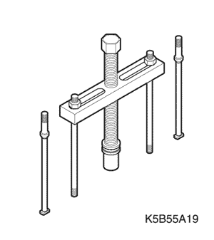
 
| DW310-010 Extractor del volante |
LOCALIZACION DE COMPONENTES
Columna y volante de dirección
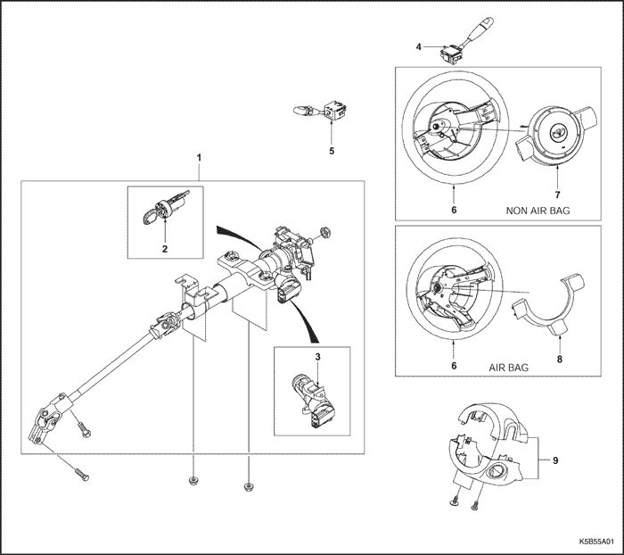
- Conjunto de la columna de la dirección
- Conjunto de bloqueo de la dirección
- Carcasa del bloqueo de la dirección
- Interruptor del limpiaparabrisas
- Interruptor de intermitentes
- Volante
- Tapa de la bocina
- Tapa superior del volante
- Tapa de la columna de la dirección
DIAGNÓSTICO
Diagnóstico de columna de dirección
Sistema de bloqueo
| Estado | Causa probable | Medida correctora |
| El sistema de bloqueo no desbloquea el volante | - Conjunto de bloqueo de la dirección dañado.
| - Sustituya el conjunto de bloqueo de la dirección.
|
- Falta de libertad de movimiento en el interruptor de contacto.
| - Lubrique el interruptor de contacto.
|
- Agarrotamiento o daños en la carcasa de la columna de la dirección.
| - Desmonte el eje de la dirección y limpie la carcasa de la columna de la dirección.
- Sustituya la carcasa de la columna de la dirección si fuera necesario.
|
| El sistema de bloqueo no bloquea el volante | - Conjunto de bloqueo de la dirección dañado.
| - Sustituya el conjunto de bloqueo de la dirección.
|
- Falta de libertad de movimiento en el interruptor de contacto.
| - Lubrique el interruptor de contacto.
|
- Agarrotamiento o daños en la carcasa de la columna de la dirección.
| - Desmonte el eje de la dirección y limpie la carcasa de la columna de la dirección.
- Sustituya la carcasa de la columna de la dirección si fuera necesario.
|
| Se requiere un gran esfuerzo para bloquear el volante | - Conjunto de bloqueo de la dirección dañado.
| - Sustituya el conjunto de bloqueo de la dirección.
|
- Falta de libertad de movimiento en el interruptor de contacto.
| - Lubrique el interruptor de contacto.
|
- Gran desalineación entre el alojamiento y la tapa.
| - Alinee de nuevo la tapa con respecto al alojamiento.
- Sustituya la tapa en caso necesario.
|
| No se puede retirar la llave de contacto en la posición LOCK | - El interruptor de contacto no se ajusta correctamente.
| - Ajuste de nuevo el interruptor de contacto.
|
- Conjunto de bloqueo de la dirección dañado.
| - Sustituya el conjunto de bloqueo de la dirección.
|
Columna
| Estado | Causa probable | Medida correctora |
| Ruido en la columna | - Juntas que unen la columna al eje intermedio mal instaladas.
| - Apriete los tornillos de presión del acoplamiento.
- Sustituya el eje intermedio si fuera necesario.
|
- Desalineación de la columna.
| - Sustituya el espaciador de alineación.
|
- Falta de lubricación de la junta.
| |
- Falta de lubricación del eje de la dirección.
| - Lubrique el cojinete del eje de la dirección.
|
- Anillo elástico de retención del eje mal asentado.
| - Ajuste el anillo elástico de retención del eje.
- Sustituya el anillo elástico de retención del eje si fuera necesario.
|
- Tornillo de sujeción del eje intermedio mal instalado.
| - Apriete el tornillo de sujección.
|
| Se requiere un gran esfuerzo para mover el eje de la dirección | - Desalineación de la columna.
| - Sustituya el espaciador de alineación.
|
| | - Sustituya carcasa de la columna de la dirección.
|
- Falta de movimiento libre de las junta universal del eje de la dirección.
| - Lubrique la junta universal del eje de la dirección.
- Sustituya el eje de la columna de la dirección si fuera necesario.
|
Columna (Cont.)
| Estado | Causa probable | Medida correctora |
| Juego en la columna de la dirección | - Tuercas de fijación del soporte de la columna de la dirección mal instaladas.
| - Apriete las tuercas de fijación del soporte de la columna de la dirección.
|
- Afloje el cojinete mal asentado en la carcasa.
| - Apriete los tornillos del soporte.
|
| | - El cojinete está mal asentado en la carcasa.
| - Asiente correctamente el cojinete.
- Sustituya la carcasa de la columna si fuera necesario.
|
- Afloje los tornillos de soporte de la carcasa de la columna de dirección.
| - Apriete los tornillos de soporte de la carcasa de la columna de dirección.
|
Interruptor de intermitentes
| Estado | Causa probable | Medida correctora |
| El interruptor del intermitente no permanece en la posición de indicación de giro | - Interruptor de intermitentes mal instalado.
| - Desmonte el interruptor de intermitentes.
- Vuelva a montar el interruptor.
|
- Componentes perdidos o rotos del mecanismo de anulación.
| - Sustituya el interruptor de intermitentes.
|
- Elementos extraños en la carcasa del interruptor de intermitentes.
| - Elimine toda la suciedad.
|
- El intermitente no se apaga
| - Componentes perdidos o rotos del mecanismo de anulación.
| - Sustituya el interruptor de intermitentes.
|
- Resulta difícil accionar el interruptor del intermitente/luces largas-cortas
| - Palanca e interruptor de intermitentes mal instalados.
| - Desmonte y revise la palanca y el interruptor de intermitentes.
- Vuelva a instalar la palanca y el interruptor de intermitentes.
|
- Elementos extraños en la carcasa del interruptor de intermitentes.
| - Elimine toda la suciedad.
|
- El intermitente no permite indicar el cambio de carril
| - Rotura de un suspensor del muelle o de una almohadilla de presión de la indicación de cambio de carril.
| - Sustituya el interruptor de intermitentes.
|
- Funcionamiento incorrecto del muelle de indicación de cambio de carril.
| - Sustituya el interruptor de intermitentes.
|
- Interruptor de intermitentes mal instalado.
| - Sustituya el interruptor de intermitentes.
|
| | - Intermitencia defectuosa.
| - Sustituya la central de intermitencias.
|
- Interruptor de intermitentes defectuoso.
| - Sustituya el interruptor de intermitentes.
|
- Conector de la columna al chasis mal instalado.
| - Conecte de nuevo el conector de la columna al chasis.
|
- Las luces intermitentes se encienden, pero no parpadean
| - Central de intermitencias inoperante.
| - Sustituya la central de intermitencias.
|
- Las luces intermitentes delanteras o traseras no parpadean
| - Central de intermitencias inoperante.
| - Sustituya la central de intermitencias.
|
- Las luces intermitentes parpadean muy lentamente
| - Central de intermitencias inoperante.
| - Sustituya la central de intermitencias.
|
Interruptor de contacto
| Estado | Causa probable | Medida correctora |
| El sistema eléctrico no funciona | - Interruptor de contacto dañado.
| - Sustituya el interruptor de contacto.
|
- Interruptor de contacto mal instalado.
| - Sustituya el espaciador de alineación.
- Vuelva a montar el interruptor de contacto.
|
- Conector eléctrico del interruptor de contacto mal instalado.
| - Conecte de nuevo el conector eléctrico del interruptor de contacto.
- Sustituya el conector eléctrico del interruptor de contacto.
|
| El interruptor de contacto no gira | - Interruptor de contacto dañado.
| - Sustituya el interruptor de contacto.
|
- Interruptor de contacto mal instalado.
| - Desmonte e inspeccione el interruptor de contacto.
- Vuelva a montar el interruptor de contacto.
|
Palanca del interruptor del limpiaparabrisas
| Estado | Causa probable | Medida correctora |
| El interruptor no funciona No enc, baja, alta, int o lava | - Interruptor del limpiaparabrisas dañado.
| - Sustituya el interruptor del limpiaparabrisas.
|
- Interruptor del limpiaparabrisas mal instalado.
| - Desmonte e inspeccione el interruptor del limpiaparabrisas.
- Vuelva a montar el interruptor del limpiaparabrisas.
|
MANTENIMIENTO Y REPARACIÓN
servicio con vehículo en marcha
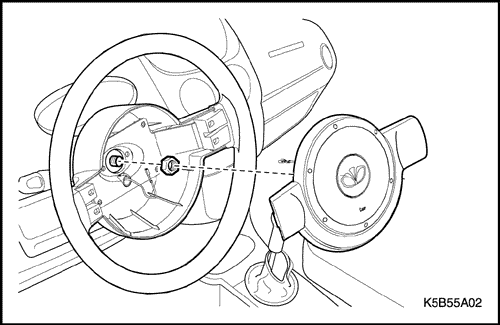
Volante
(Indicado para conducción a izquierdas, conducción a derechas similar)
Herramientas necesarias
DW310-010, Extractor de volantes
Procedimiento de desmontaje
- Desconecte el cable negativo de la batería.
- Desmonte el módulo SIR. Consulte la sección 8B, Sujeciones suplementarias hinchables. (En vehículos con SIR).
- Desmonte el volante.
- Desmonte la tapa de la bocina del volante (para vehículos sin SIR).
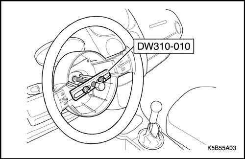
- Quite la tuerca del volante.
- Con el fin de montar el volante de forma correcta, haga marcas de alineación en el eje de la columna de la dirección y en el volante.
- Desmonte el volante utilizando el extractor del volante DW310-010.
Importante: Tenga cuidado de no golpear con el martillo la parte superior del eje de la columna de dirección durante la reparación.
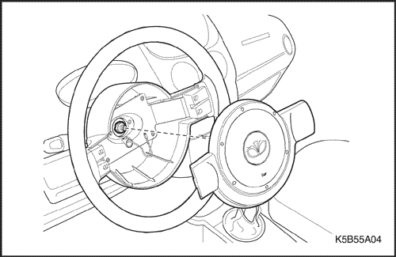
procedimiento de montaje
- Monte el módulo SIR. Consulte la Sección 8B, Sujeciones suplementarias inflables.
Importante: Alinee las marcas del volante y del eje de la columna de la dirección.
- Monte el volante.
- Coloque la tuerca del volante en el eje de la columna de la dirección.
Apretar
Apretar Apriete la tuerca del volante de dirección hasta 38 N•m (28 lb-pulg.).
- Conecte el cable negativo de la batería.
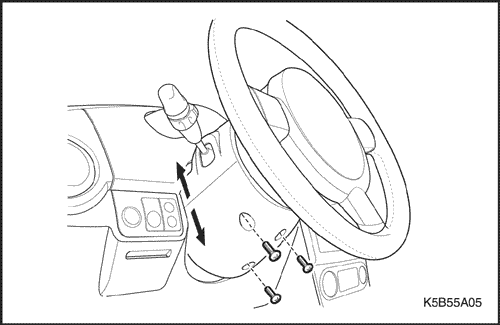
Tapa de la columna de la dirección
(Indicado para conducción a izquierdas, conducción a derechas similar)
Procedimiento de desmontaje
- Quite los tornillos.
- Desmonte la tapa superior e inferior de la columna de la dirección.
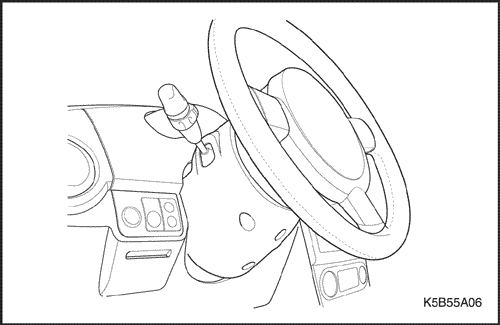
procedimiento de montaje
- Monte la tapa superior e inferior de la columna de la dirección con sus tornillos.
Apretar
Apriete los tornillos del panel de recubrimiento de la columna de dirección hasta 2,5 N•m (22 lb-pulg.).
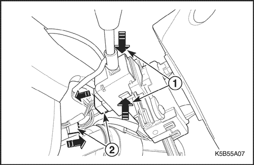
Interruptor y palanca de intermitentes / Interruptor y palanca del limpiaparabrisas
(Indicado para conducción a izquierdas, conducción a derechas similar)
Procedimiento de desmontaje
- Desconecte el cable negativo de la batería.
- Desmonte la tapa de la columna de dirección. Consulte el apartado "Tapa de la columna de dirección" en esta sección.
- Desmonte el interruptor de intermitentes.
- Desconecte el interruptor del intermitentes empujando el bloqueo desde el alojamiento del interruptor (1).
- Desenchufe el conector (2).
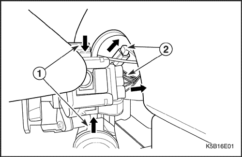
- Desmonte el interruptor del limpiaparabrisas.
- Desconecte el interruptor del intermitente empujando el bloqueo desde el alojamiento del interruptor (1).
- Desenchufe el conector (2).
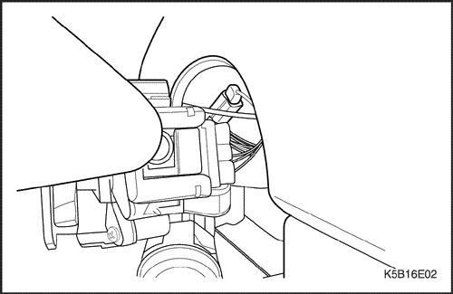
procedimiento de montaje
- Monte el interruptor del limpiaparabrisas y enchufe el conector.
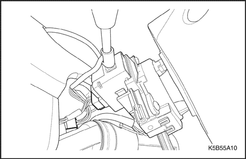
- Monte el interruptor de intermitentes y enchufe el conector.
- Monte la tapa de la columna de dirección. Consulte el apartado "Tapa de la columna de dirección" en esta sección.
- Conecte el cable negativo de la batería.
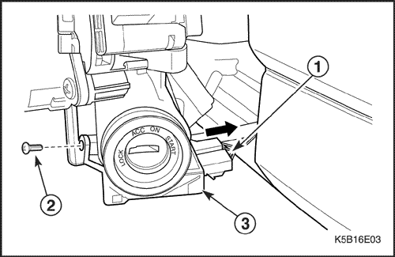
Conjunto de bloqueo de la dirección
(Indicado para conducción a izquierdas, conducción a derechas similar)
Procedimiento de desmontaje
- En vehículos con inmovilizador, desmonte el volante. Consulte el apartado "Tapa de la columna de dirección" en esta sección.
- Desmonte la tapa de la columna de dirección. Consulte el apartado "Tapa de la columna de dirección" en esta sección.
- En vehículos con inmovilizador, desmonte el inmovilizador.
- Desenchufe el conector (1).
- Quite el tornillo (2).
- Desmonte el inmovilizador (3).
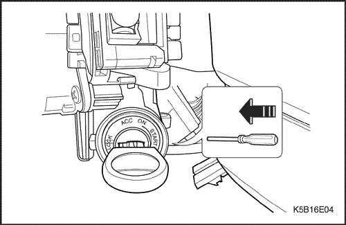
- Con la llave de encendido en la posición ACC, desmonte el conjunto de bloqueo de la dirección presionando hacia abajo el muelle de retención y tirando hacia afuera el conjunto de bloqueo de la dirección hasta sacarlo de su carcasa.
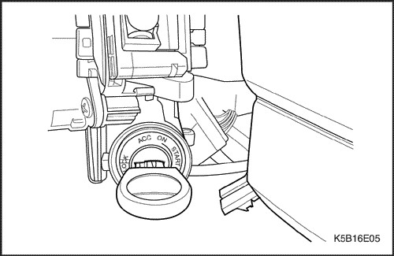
procedimiento de montaje
Importante: Para instalar el conjunto de bloqueo de la dirección, la posición de la llave de contacto debe ser ACC.
- Monte el conjunto de bloqueo de la dirección.
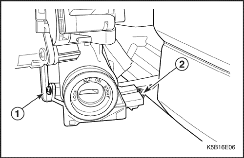
- En vehículos con inmovilizador, monte el inmovilizador.
- Coloque el tornillo (1).
- Enchufe el conector (2).
- Monte la tapa de la columna de dirección. Consulte el apartado "Tapa de la columna de dirección" en esta sección.
- En vehículos con inmovilizador, monte el volante. Consulte el apartado "Volante" de esta sección.
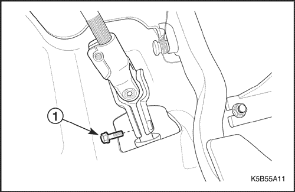
Conjunto de la columna de la dirección
(Indicado para conducción a izquierdas, conducción a derechas similar)
Procedimiento de desmontaje
- Desmonte el volante. Consulte el apartado "Volante" de esta sección.
Precaución: Desconecte el cable de la batería y deje el vehículo en reposo durante un minuto para que se desactive el airbag (en vehículos con SIR).
- Desmonte el interruptor de intermitentes y el interruptor del limpiaparabrisas. Consulte el apartado "Palanca e interruptor del intermitente/palanca e interruptor del limpiaparabrisas" de esta sección.
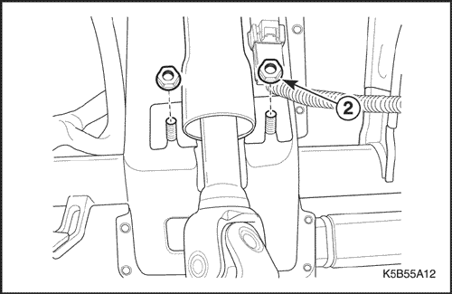
- Desmonte el conjunto de bloqueo de la dirección. Consulte el apartado "Conjunto de bloqueo de la dirección" en esta sección.
- Desmonte el conjunto de la columna de dirección.
- Quite el tornillo de sujeción superior del eje intermedio (1).
- Quite las tuercas inferiores de la columna de la dirección (2).
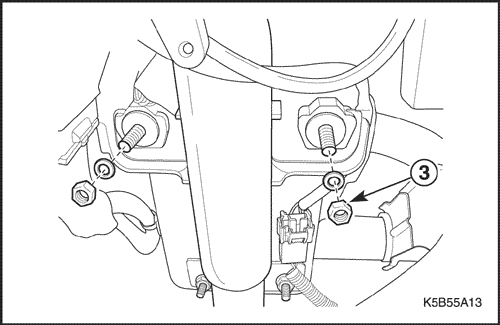
- Quite las tuercas superiores de la columna de la dirección (3).
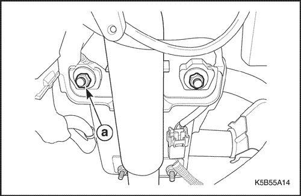
procedimiento de montaje
- Monte el conjunto de la columna de dirección.
- Coloque las tuercas superiores de la columna de la dirección (a).
Apretar
Apriete la tuerca superior hasta 17,5 N•m (13 lb-pie).
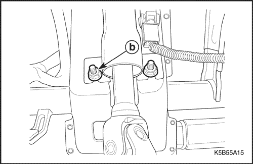
- Coloque las tuercas inferiores de la columna de la dirección (b).
Apretar
Apriete la tuerca inferior hasta 17,5 N•m (13 lb-pie).
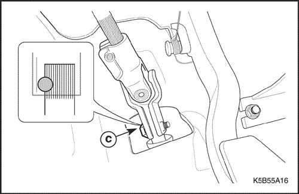
- Coloque el tornillo de sujeción inferior del eje intermedio (c).
Apretar
Apriete el tornillo de sujeción hasta 25 N•m (18 lb-pie).
- Monte el conjunto de bloqueo de la dirección. Consulte el apartado "Conjunto de bloqueo de la dirección" en esta sección.
- Monte el interruptor de intermitentes y el interruptor del limpiaparabrisas. Consulte el apartado "Palanca e interruptor del intermitente/palanca e interruptor del limpiaparabrisas" de esta sección.
- Monte el volante. Consulte el apartado "Volante" de esta sección.
DESCRIPCIÓN GENERAL Y FUNCIONAMIENTO DEL SISTEMA
Columna y volante de dirección
Además de cumplir con la función dirección del vehículo, la columna de la dirección desarrolla otros aspectos relacionados con la seguridad.
Precaución: Para garantizar la acción de absorción de energía es importante utilizar sólo tornillos y tuercas especificados, apretados según el par especificado.
La columna absorbente de energía está diseñada para comprimirse, en el caso de un choque frontal, y disminuir las posibilidades de lesión al conductor.
El interruptor y la cerradura de la llave de contacto van montados en la columna, permitiendo el bloqueo del encendido y de la dirección con el fin de evitar el robo del coche.
Las palancas de la columna activan los intermitentes, los faros y los limpia/lavaparabrisas.
Aviso: Cuando se monte de nuevo el conjunto, aplique una capa fina de grasa con base de litio a todos los puntos de fricción con el fin de asegurar un funcionamiento adecuado.
La columna puede montarse y desmontarse fácilmente.